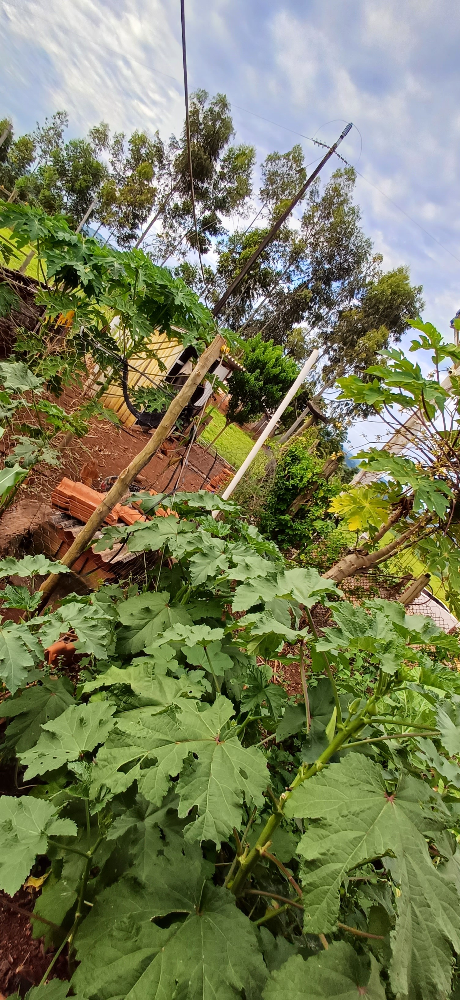
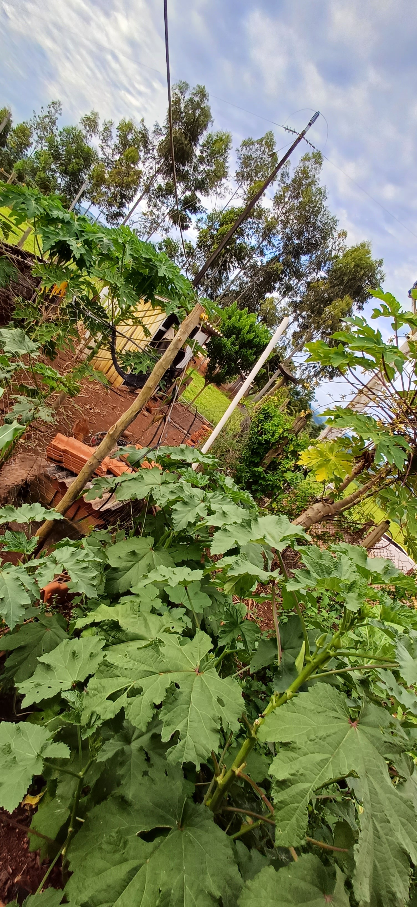

Bem-vindo ao Futuro
FU
TU
RO
Bem-vindo ao Futuro


Por muito tempo, o campo foi palco de um trabalho intenso e marcado pelo esforço físico, onde a produção dependia diretamente da força humana e de técnicas artesanais, transmitidas de geração em geração.

Hoje, a tecnologia modernizou o campo com máquinas, drones e sistemas inteligentes, tornando a produção mais eficiente e sustentável.
Veja nas imagens como a inovação está presente em cada etapa:


.png)
Campo e cidade se complementam, promovendo economia e abastecimento.

Integração rural-urbana gera empregos e desenvolvimento regional.

Uso racional dos recursos preserva o meio ambiente e gera alimentos saudáveis.
A tecnologia permite maior produção com menos recursos, usando inteligência artificial, sensores, drones e automação. Isso garante mais sustentabilidade, eficiência e conforto para quem vive no campo.
“A conta de luz da irrigação era de R$ 500 a R$ 800 por mês. Depois que instalei os painéis solares, caiu para R$ 10.”
— Juliano Luiz dos Santos, agricultor de São José do Belmonte (PE).
Ele aumentou a produção de maracujá com energia solar.
Fonte: Canal Solar

Monitoram plantações e identificam pragas.
Controlam irrigação com precisão.
Plantam e colhem com eficiência.
Analisam clima, solo e produtividade.

 

O Paraná tem uma das maiores redes de cooperativas agrícolas da América Latina. Elas representam mais de 60% da produção de grãos do estado.